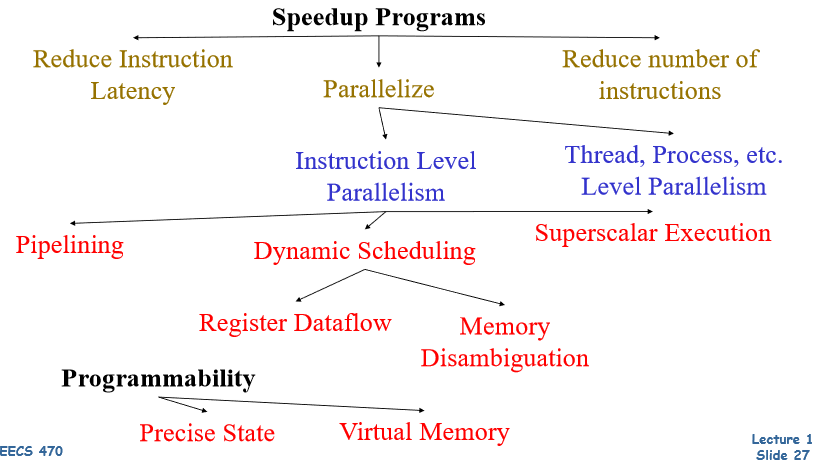
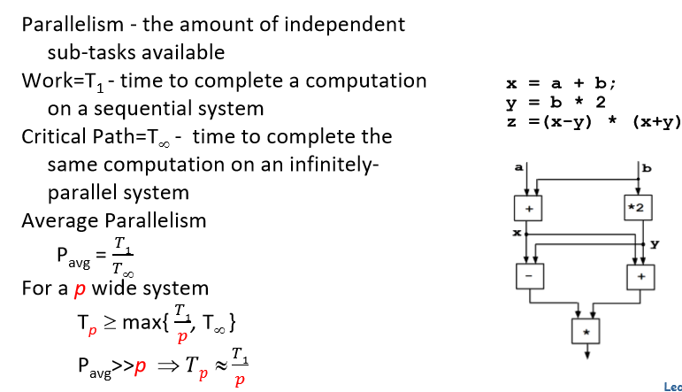
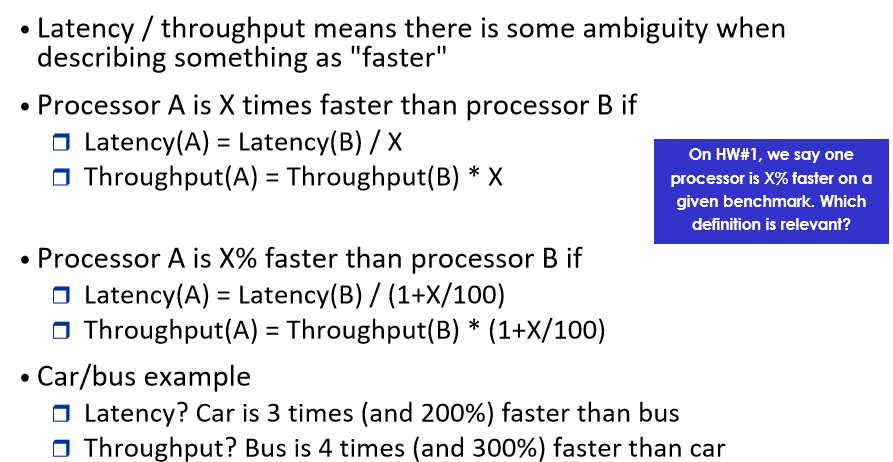
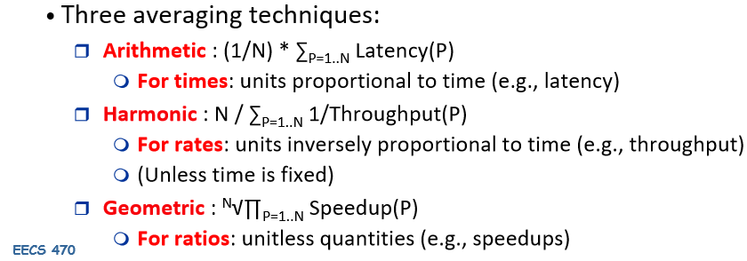
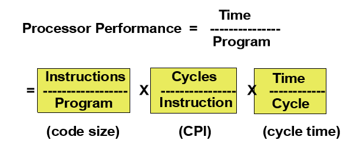
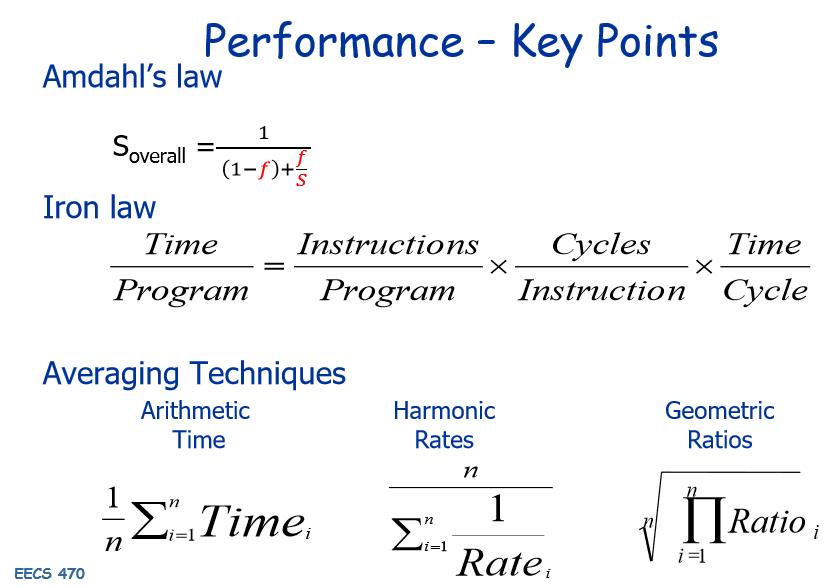
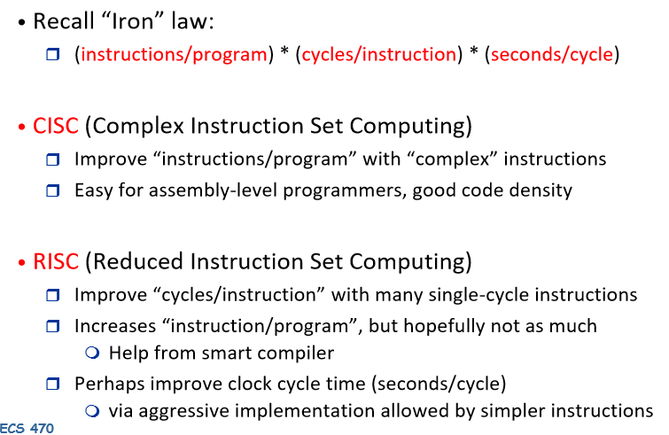
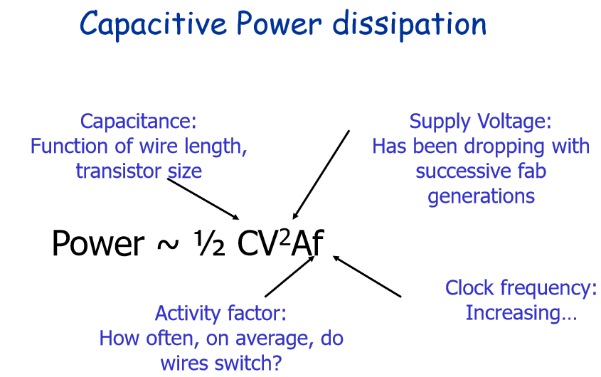
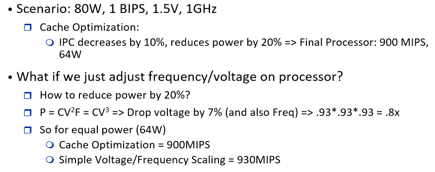

2 Performance, Power, ISA
How do we speed up tasks? Three options
- Do less things
- Program more efficiently
- Compilers - optimize code
- Do things faster
- Logic optimizations
- Circuits - design faster and more efficient circuits
- Architecture
- Memoization - (save results of previous comp. in memory to avoid recomputing)
- Locality - predict/speculate, cache
- Do more things at the same time
- Architecture - Parallelization!
- Pipelining
- Speculative execution
- Dynamic scheduling
- Register Renaming
- Branch Prediction
- Superscalar
- Multiprocessing / Multithreading
- VLIW
- Architecture - Parallelization!

2.1 Parallelism
2.1.1 Amdahl’s Law
Suppose an enhancement speeds up a fraction \(f\) of a task by a factor of \(S\):
\[time_{new} = time_{orig} \cdot ((1 - f) + \frac{f}{s})\]
Amdahl’s Law:
\[S_{overall} = \frac{1}{(1-f)+\frac{f}{s}}\]

2.2 Performance
Two key performance metrics:
- Latency (execution time): time to finish a fixed task
- Throughput (bandwidth): number of tasks finished in fixed time

2.2.1 Averaging Metrics
Latency can be added, but not throughput!
- Latency(A+B) = Latency(A) + Latency(B)
- Throughput(A+B) \(\neq\) Throughput(A) + Throughput(B)
Adding throughput:
\[Throughput(A+B) = \frac{1}{\frac{1}{Throughput(A)} + \frac{1}{Throughput(B)}}\]
Averaging Techniques:

2.2.2 Iron Law of Processor Performance

Another way of looking at it:
- seconds / instruction = (cycles / instructions) * (seconds / cycle)
2.2.3 Performance - Summary

2.3 Instruction Set Architectures
ISA is the “contract” between software and hardware:
- Functional definition of operations, modes, and storage locations supported by hardware
- Precise description of how to invoke and access them
2.3.1 RISC vs CISC

Back in the day it was important to minimize number of instructions due to limited memory. This has become much less of a concern nowadays.
2.4 Power
- Dynamic Power: Switching power
- Capacitive and short-circuit
- Capacitive power: charging/discharging transistrs from 0 to 1 and 1 to 0
- Short-circuit power: power due to brief short-circuit current during the transitions
- Data dependent - a function of switching activity
- Static Power: leakage power
- Steady, per-cycle energy cost
- Dynamic power dominates but static power increasing in importance (due to large transistor count and increasing leakage in tech scaling and )

- Power (Watts)
- Determines battery life in hours
- Sets packaging limits (due to thermals, etc)
- Energy (Joules)
- Rate at which energy is consumed over time
- Energy = Power \(\times\) Delay
- Joules = Watts \(\times\) Seconds
2.5 Voltage Scaling

Power has a cubic relationship with voltage! Why? Voltage linearly correlated to frequency (higher VDD enables faster switching)
2.6 CPI, IPC
Cycles Per Instruction
- Lower the better
- IPC is its inverse
- Summary for different arch:
- Ideal in-order pipeline (no stalling): 1 (ignoring cycles to load up and clear the pipeline)
- Problem: Can never get more than 1 IPC unless we go superscalar
- Ideal in-order pipeline (no stalling): 1 (ignoring cycles to load up and clear the pipeline)